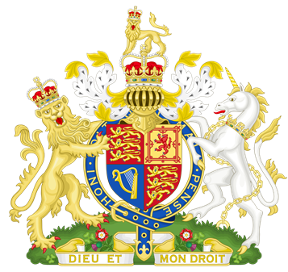

目录
Ø 海盗歌曲
Ø 四千人的军队
Ø 哥德尔
Ø 日本国会礼仪
Ø 狂猎
Ø 通天塔图书馆
Ø 黑券
2. 剧情：
Ø 共通部分
Ø 分歧部分
Ø 其它
2. 出典：
² “Fifteen men on the dead man’s chest——
...Yo-ho-ho, and a bottle of rum!”
出自《金银岛》中的海盗歌曲“腐烂的桶”。
据说“dead man’s chest”在现实中是西印度群岛或波多黎各以南的一个小岛。 前者是一个小岛，没有水或树木，因此不可能生活在其中。 后者有树木和生物，但是没有任何东西将很难生活。
Figure 1. 金银岛中海盗歌曲的出处
² Bill Bones，Pirate’s death sentence
比尔·蓬斯在《金银岛》的开头首度登场，他带着一个大箱子入住吉姆·霍金斯父亲所开设的本鲍将军旅店，他只要求对方称他为“船长”，并支付不少的住宿费用。另外蓬斯还每月给吉姆四便士，要求他帮忙留意一个“只有一条腿的水手”。白天的大部分时间他总是在沿海的悬崖上行走。
过度酗酒的蓬斯每晚以讲故事、唱歌及咒骂人来恐吓旅店中的其他旅客，使吉姆的父亲感到十分困扰乃至因此病倒。但有部分当地人十分推崇蓬斯，还称其为“真正的老航海”。当年冬天，同是弗林特部下的海盗“黑狗”来到旅店找上蓬斯，两人爆发争吵及打斗，黑狗被赶走，但蓬斯随即中风倒地。李甫西大夫救下了蓬斯的生命，且在为他放血时从其臂上的刺青发现了他的真名。
之后蓬斯不理会李甫西的警告，依然继续酗酒，但身体明显变得衰弱。几日后，海盗之一的瞎子皮尤到达旅店，将“黑卷”交到蓬斯手中；蓬斯对此感到十分恐惧，不久后即中风死去。众海盗袭击了旅店以试图找到蓬斯持有的藏宝图，然而吉姆·霍金斯已带着藏宝图离去，并在后来展开了寻找宝岛宝藏的冒险。
Figure 2. 比尔·蓬斯
日本大赛（日语：日本選手権シリーズ），正式全名为职业棒球日本锦标系列赛（プロ野球日本選手権シリーズ試合），是指每年10月由日本职棒中央联盟（CL）和太平洋联盟（PL）的冠军队伍所举行的比赛，但2007年以后导入季后赛制度，由两联盟高潮系列赛胜出的球队争霸，胜出的队伍可以获得当年的“日本一”的称号。该系列赛曾于1950年至1953年根据大联盟的世界大赛称为日本世界大赛。
到2019年，央联与洋联以35胜35负的成绩战成平手。
Figure 3. 2019日本棒球总决赛标志
路易斯·卡罗，《爱丽丝漫游仙境》的作者，曾向玩具制造商Barringer, Wallis and Manners订购了300个经过特别设计的《镜之国的爱丽丝》的饼干盒，供刘易斯·卡洛尔（Lewis Carroll）赠送给朋友和家人。目前有部分饼干盒在英国的各大博物馆展出。
_VII_Treasure.files/image005.jpg)
Figure 4. 英国玩具和模型博物馆中现存的饼干盒之一
出自《爱丽丝梦游仙境》最后两章的审判。爱丽丝到了审判的场所，红心骑士（Knave of Hearts）被控偷了红心王后的馅饼。陪审团由各种动物担任，包括蜥蜴比尔，白兔先生则担任喇叭手。在审判期间，爱丽丝发现自己愈长愈大，睡鼠（dormouse）说爱丽丝无权以这么快的速度长高，把他挤得喘不过气。爱丽丝回道睡鼠的控诉荒谬，因为每个人都会长大，而她自己没办法停下这个过程。同时，疯帽子和公爵夫人的厨师被传唤作证，当这两人的询问结束以后，爱丽丝被白兔先生传唤为下个证人。
爱丽丝被传为证人，当她站起来时因为长太大了而弄倒了陪审员席，国王只得命令审判暂停到陪审员回到席次上。国王和王后引用第42条规定：身高一英里以上者必须退出法庭，但爱丽丝否认并拒绝离开。最后，王后和爱丽丝在一阵争吵以后，下令砍掉爱丽丝的头，但爱丽丝并不怕，她认为他们只不过是纸牌。整副牌此时飞上天，又落到爱丽丝身上，爱丽丝正要挥去这些牌，却发现自己在河边醒来，头还枕在姐姐的腿上，姐姐正挥去爱丽丝脸上的枯叶。爱丽丝把这个梦告诉姐姐，然后先离去了，姐姐则一边想着爱丽丝的奇怪梦境，一边恍惚地睡着了。
Figure 5.《爱丽丝梦游仙境》中描绘审判场景的插图
² Potential Infinity
实无限和潜无限（actualinfinity and potential infinity）指数学上两种不同的无限观。
数学上的实无限思想是指：把无限的整体本身作为一个现成的单位，是已经构造完成了的东西，换言之，即是把无限对象看成为可以自我完成的过程或无穷整体。按照此观点，所有的自然数可以构成一个集合，因为可以将所有的自然数看做是一个完成了的无穷整体。康托的朴素集合论就是建立在实无穷的基础之上的。举个形象点的例子就是，一条线段上的点有无穷个，但是这条线段本身又是有限的。
数学上的潜无限思想是指：把无限看作永远在延伸着的，一种变化着成长着被不断产生出来的东西来解释。它永远处在构造中，永远完成不了，是潜在的，而不是实在。把无限看作为永远在延伸着的（即不断在创造着的永远完成不了的）过程。按照此观点，自然数不能构成为一个集合，因为这个集合是永远也完成不了的，它不能构成一个实在的整体，而是永远都在构造之中。举个形象点的例子就是，构成一条直线的点有无穷个，并且这条直线永远延伸着，不会有终结的一天。
从哲学上讲，从公元前400多年前开始就对无穷的观念产生了分歧，对于潜无穷与实无穷的无穷观之争一直延续至今。如果坚持潜无穷论，将导致一些与实际相矛盾的现象，并且数学上将导致现代数学失去大部分内容。当然坚持实无穷论，也会出现一些与日常知识不一致的方面(如整体大于部分将不再绝对成立)。基于哲学上对无穷不同认识的影响，数学中也始终存在着潜无穷与实无穷之争论。
游戏中提到的奥地利数学家库尔特·哥德尔（Godel）是主张实无限的著名人物。
独角兽传说起源，最早可能可以追溯到印度河流域文明。
底部雪白，中间乌黑，顶端鲜红，独角兽锐利的角有着奇异的魔力。从角上挫下来的粉末可以解百毒，服下粉末即可抵御疾病、百毒不侵，更能够起死回生。独角兽的血液也有治病、甚至起死回生的能力，不过传说只要喝下其血液，就等于玷污了这纯洁的生物，会得到诅咒，从今以后只能像行尸走肉般生活。魔力令人们对这只离奇的角发狂，每个贵族都想拥有独角兽角做的酒杯，每个猎人都妄想有朝一日独角兽落入他的陷阱。
在欧洲大陆的传说中，独角兽是纯洁的化身，更被苏格兰选为王室的象征，它有时被描绘成雌性，而其角具有解毒的作用。
Figure 6. 位于意大利罗马法尔内塞宫（Palazzo Farnese）内的一幅壁画，
中世纪的神话传说中，单纯善良的独角兽往往被处女所吸引。
结局3中出现的狮子（阿斯兰）与独角兽，出自《鹅妈妈》中的诗歌，原诗为：
|
The lion and the unicorn Were fighting for the crown The lion beat the unicorn All around the town.
Some gave them white bread, And some gave them brown; Some gave them plum cake and drummed them out of town. |
狮子和独角兽为了王冠战斗。 狮子把独角兽打得落花流水。
有的给他们白面包，有的给黑面包；有的给他们梅子蛋糕，有的赶他们出城去 |
狮子和独角兽还曾出现在《爱丽丝镜中奇遇记》中：一群士兵蜂拥的穿越树林跑来，不过这些士兵相当笨拙，不时就会跌倒。爱丽丝见到白国王，国王的盎格鲁萨克逊信使这时也出现并告诉国王狮子和独角兽正在打架。一行人于是到了打斗的地点，打斗却正好结束了。爱丽丝替狮子和独角兽切蛋糕，她照着独角兽的指示转一圈再切，响起的鼓声把他们打断，爱丽丝惊惶的跨过小溪。
在现实中，英国皇家徽章也有狮子和独角兽，狮子象征英格兰，而独角兽则象征苏格兰。 在历史上两方经常吵架和争斗。

Figure 7. 英国皇家徽章
薛定谔猫（英语：Schrödinger's Cat）是奥地利物理学者埃尔温·薛定谔于1935年提出的一个思想实验。通过这思想实验，薛定谔指出了应用量子力学的哥本哈根诠释于宏观物体会产生的问题，以及这问题与物理常识之间的矛盾。在这思想实验里，由于先前发生事件的随机性质，猫会处于生存与死亡的叠加态。[1]:317
根据退相干理论，猫不可能永远处于生存与死亡的叠加态，由于环境的影响，很快地会产生退相干效应，猫改而处于生存或死亡的经典统计学状态，因此，一般而言，绝对无法观察到这生存与死亡的叠加态。[2]:82至今为止，物理学者只能精心制备出一些介观物体的叠加态。
虽然这是个思想实验，类似原理已被研究与运用在实际应用领域。当理论研讨量子力学的诠释问题时，这思想实验也时常会被特别提出为试金石。
因为这个缘故，游戏中结局1、2中的柴郡猫吞下了必死的“黑卷”时才没有死亡。
_VII_Treasure.files/image009.png)
Figure 8. 薛定谔的猫概念图
伽子临终前的话，出自《哈姆雷特》，哈姆雷特被毒剑所伤，临死前对朋友赫瑞修说的临终的话，“Horatio, I am dead.”，翻译过来就是“赫瑞修，我死了”。
² All the king’s soldier and all the king’s men
游戏的原句是“四千人的军队”，这句话首先是出自《鹅妈妈》中，矮胖子Humpty Dumpty的诗歌，原诗为：
|
Humpty Dumpty sat on a wall Humpty Dumpty had a great fall. All the king's horses, And all the king's men, Couldn't put Humpty together again.
|
矮胖子，坐墙头， 栽了一个大跟斗。 国王呀，齐兵马， 破镜难圆没办法。 |
另外也出自《爱丽丝镜中奇遇记》，这位矮胖子变成了蛋形。原文是：“当爱丽丝走到离它几步远的时候，她看到蛋上面有眼睛、鼻子和嘴。当更靠近时，她清楚地看到这就是著名的“矮胖子”了。”
在前面灰流和雨森的对话中，也提到了雨森身体内的“蛋”。
_VII_Treasure.files/image010.jpg)
Figure 9. 《爱丽丝镜中奇遇记》中的矮胖子插画。
库尔特·弗雷德里希·哥德尔（德语：Kurt Friedrich Gödel，1906年4月28日－1978年1月14日），出生于奥匈帝国的数学家、逻辑学家和哲学家，维也纳学派（维也纳小组）的成员。哥德尔是二十世纪最伟大的逻辑学家之一，其最杰出的贡献是哥德尔不完备定理和连续统假设的相对协调性证明。
Figure 10. 哥德尔像，摄于1925年
在日本国会，不论议员的性别年龄一概称对方“XX君”。这是日本国会《参议院先例录》中的规定。传说这是吉田松阴为了让不同身份之间的人可以平等地进行讨论而率先在松下村塾中推广开始的。而初任总理大臣伊藤博文出身松下村塾，将这一说法推广了开来。
指《爱丽丝镜中奇遇记》中第八章出场的白骑士。他在镜中世界对爱丽丝最为温柔，并且向爱丽丝吟过诗。
也是《爱丽丝镜中奇遇记》里的出场人物，同时也是鹅妈妈童谣中Humpty Dumpty 童谣的主角。特点是喜爱向爱丽丝解说事物。
狂猎（英语：Wild Hunt），是一个欧洲民间神话。
传说在暴风雨之夜，骑着幽灵马的狂猎会在空中狩猎翱翔。
狂猎可能是精灵、仙女或死者也有人说其就是奥丁。狂猎之王通常是与奥丁有关的一个名字（或者同一个神的其他版本）；但也有可能是一类历史或传奇人物，比如狄奥多里克大帝；或者《圣经》中人物，比如希律王、该隐、加布里埃尔或魔鬼；或者一个不知名的迷失的灵魂或精神。
“无限的书架”这一比喻应该是脱胎于博尔赫斯的小说《通天塔图书馆》。其开篇便提到：
宇宙（别人管它叫图书馆）由许多六角形的回廊组成，数目不能确定，也许是无限的，中间有巨大的通风井，回廊的护栏很矮。从任何一个六角形都可以看到上层和下层，没有尽头。回廊的格局一成不变。除了两个边之外，六角形的四边各有五个长书架，一共二十个，书架的高度和层高相等，稍稍高出一般图书馆员的身长。
出典是《金银岛》，如《Forest》所描述的，黑券是海盗们之间流传的死亡通知书。在《金银岛》中出现多次，最后一次海盗们制作黑券时，因为纸张不够，不得不从《圣经》上撕纸下来用作材料。原文是这样描述的：
这是像一枚银币大小的一张圆纸片。一面空白，因为原来是《圣经》的最后一页；另一面印着《启示录》的最后几节，我在家乡时对其中一句印象特别深刻：“城外是犬类和杀人犯。”印有经文的一面涂着炭末，把我的手指也染黑了；空白的一面也是用炭写着“下台”两个字。这件纪念品至今留在我身边，但上面的字样已无法辨认，只剩下一些像是用指甲刮出来的痕迹。
1. 剧情：
10月24日，第六章的一个月以后，Alice变回伽子回了家，被锁在了屋子里。她知道黛娜不会回来了。此时海盗闯入，他们在寻找Alice。伽子乘出租车带走了他们。
刈谷的餐厅里，（分歧点1）玛丽夫人对众人宣告最后一个谜题已经开始了，主题是寻宝，寻找森林的最后珍宝。雨森的高跟鞋坏了，灰流把她送回家。
伽子在出租车上被两个海盗夹在中间，途中她看到了灰流和雨森。伽子带两位海盗进入已故的餐厅，拿到了饼干盒，并从海盗手中逃脱。逃跑的过程中发生了枪战，玛利夫人和东京都知事展开了行动，最后伽子被逮捕。
随后，东京都知事主持森林的审判。因为伽子是未成年人（minor），所以庭审的过程给伽子进行了打码变声处理。庭审的过程中，（分歧点2）东京都知事谴责伽子是森林的叛徒。伽子辩称自己是爱丽丝，东京都知事说整个森林都在寻找爱丽丝，因为她是森林最后的宝藏，因此要求她拿出证据。Kako想拿到饼干盒，以此穿上爱丽丝的衣服。但东京都知事同时也指出爱丽丝也犯下了很多罪，并且以3、4、5章的顺序依次陈述：
1. 通过灰流带着的Plantir，东京都知事认定了爱丽丝犯有强奸罪。
2. Gloriana想要自己的霸权稳定，横竖给伽子判死刑。
3. 戴手表的白兔出现（口癖是要迟到了），要求爱丽丝对The Game中Jabberwock早成的巨大死伤进行赔偿。
东京都知事等衣服的时候，问旁听席森林的珍宝是什么，雨森宣称是永恒森林的全部，而灰流和伽子进行了反驳。东京都知事拿到了衣服，但是伽子不想穿上了。东京都知事厉声警告，说背叛Forest的人都不会有好下场，她还揭露了伽子只是爱丽丝的扮演者这个事实（详见下一章），不想扮演爱丽丝的话，伽子就只有死路一条。
伽子选择反抗，她召唤黑骑士杀掉了东京都知事，并且乘独角兽逃跑。（分歧点3）众人追击到了新宿时钟塔。灰流最先找到了伽子。伽子接受了自己将死的命运，临死前和灰流H，让自己作为人类死去，作为对自己“角色”命运的最大抗争。
伽子死亡后，灰流把她的衣服穿了回去，雨森到达，在和灰流争执一番后跳楼，爱丽丝重生，第七章结束。
第七章有3个分歧点，刈谷餐厅的汇合与枪战，伽子的审判，以及追击逃跑伽子的过程。这3个地方可以被以下之前游戏的选项所影响：
❏ 第四章最后的Bring her back/Let her rest选项，如果选择了召唤Tinker，则在第七章最后，爱丽丝重生之前，会有无法回避的BE。
❏ 第五章开始的九月/黛选项，如果选了黛，在第七章最后，爱丽丝重生之前的相同位置，会有无法回避的BE。
❏ 第六章的5个不同结局，会给第七章的剧情带来很大变化。
确定第四章和第五章的选项正确的情况下，我们先讨论第六章五个结局带来的剧情分歧：
 结局1和结局2：
结局1和结局2：
视角转入刈谷的餐厅，现在有别人接管了这家餐厅。
除了刈谷之外的其他主角都在，黛开始为不见的刈谷即兴演唱凯尔特式的怀旧歌曲，所有人都看到了黛心态的转变。现在的黛乐观，坦率且热血。
审判的时候，黛想叫奥博隆（彼得潘）但是被九月阻止。柴郡猫带领众人追击伽子，并吞下了可能致死的black spot，因为薛定谔的猫的缘故而没有死亡。
 结局3：
结局3：
刈谷的餐厅将要转手，这是她最后一次招待众人来餐厅。众人吃了意大利餐，雨森喝醉了。刈谷为两人打了一辆车。
伽子到餐厅的时候，刈谷眼尖发现了伽子，认出了她是黑爱丽丝，并通知了在出租车上的灰流。在海盗和纸牌士兵的枪战中，雨森被枪击击中，阿斯兰带着独角兽出现，灰流用独角兽的角治好了雨森。
审判和追击的时候会多一些刈谷的话，但是结局不变。
Figure 9. 刈谷的笑容
 结局4：
结局4：
有人接管了这家餐厅，主角5人在餐厅吃饭，黛还在海狸那里睡着，不出现于后面的审判过程。枪战的经过和结局1、2的版本类似。
审判的过程中，戴手表的白兔会解释变成树的黛的事（详见下一章）。
 结局5：
结局5：
在通过前面不同的剧情之后，结局5就没有新的东西了，从第七章开头可以直接跳到Standstill的开头。
 第四章选Bring
him back：
第四章选Bring
him back：
Gloriana在作证时的发言会有些许不同，在时钟塔下tinker和彼得潘会来找雨森的麻烦。
 第五章选黛：
第五章选黛：
庭审中雨森对爱丽丝说，她在The Game里是凭自己的一直召唤出的怪物Jabberwock